Witam serdecznie
Sprzedam swojego prywatnego Passata B8 w wersji Highline DSG
Nr nadwozia WVWZZZ3CZKE061431
Posiada on dużo lepsze wykończenie i materiały niż w innych wersjach.
Silnik 1.5 TSI 150 km w nadwoziu kombi cechuje się małym apetytem na paliwo, zachowując przy tym świetne osiągi i dynamikę jazdy.
Bardzo fajnie wyposażony:
- Automatyczna skrzynia biegów z łopatkami w kierownicy do zmiany biegów
- Hamowanie awaryjne przy parkowaniu
- Aktywny tempomat z funkcją hamowania
- Świtała TOP LED z funkcją automatycznej regulacji i wycinania pojazdów
- Bardzo wygodne fotele ergoComfort z elektryczną regulacją w fotelu kierowcy ( pochylenie i odcinek lędźwiowy)
- Podgrzewane przednie fotele
- Bez kluczykowy dostęp oraz odpalanie ( również w tylnych drzwiach - mega wygodne i praktyczne)
- Automatyczna klapa bagażnika otwierana ruchem nogi oraz z przycisku po stronie kierowcy
- Podgrzewane i automatycznie składane lusterka
- Regulowana kierownica w kierunkach przód tył oraz góra dół
- Fotele alkantara w środku i skóra po bokach, dzięki alkantarze w środkowych częściach nie ślizgamy się na fotelach
- DUŻE dotykowe radio
- Czujnik deszczu
- Czujnik zmierzchu
- Przyciemnione fabrycznie szyby tył
- Relingi dachowe
- Piękne Alufelgi 17" i koła zimowe tez na Aluminiowych felgach
- Wygodny regulowany w dwóch płaszczyznach podłokietnik
- Kieszenie w przednich fotelach dla pasażerów z tyłu
- Podłokietnik również z tyłu z miejscami na napoje
- Dzielona tylna kanapa z otworem na długie przedmioty np. narty
- Regulowane zagłówki z opcją przód tył
- Pełnowymiarowe koło zapasowe
- 3 strefowa klimatyzacja regulowana również w tylnej części
- System Air Care ( oczyszczanie powietrza wewnątrz pojazdu)
- Dwa kluczyki
- Relingi dachowe
- Wersja HighLine co wiąże się z dużo lepszym wykonaniem niż np. w wersjach Business
- Pewnie jeszcze kila rzeczy o których zapomniałem
W ostatnim czasie wymienione:
Świece zapłonowe
Olej w silniku
Filtr oleju
Filtr powietrza
Olej w skrzyni biegów
Dwa komplety opon, zimowe na aucie a letnie w garażu

 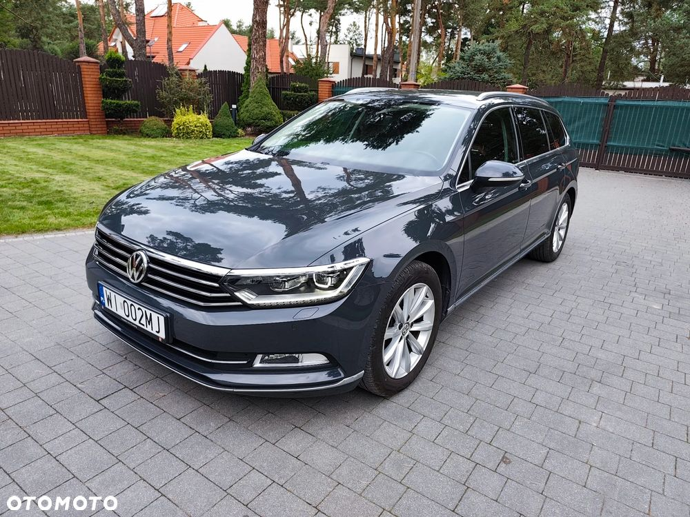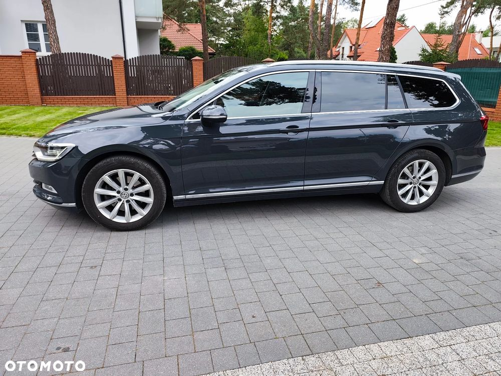
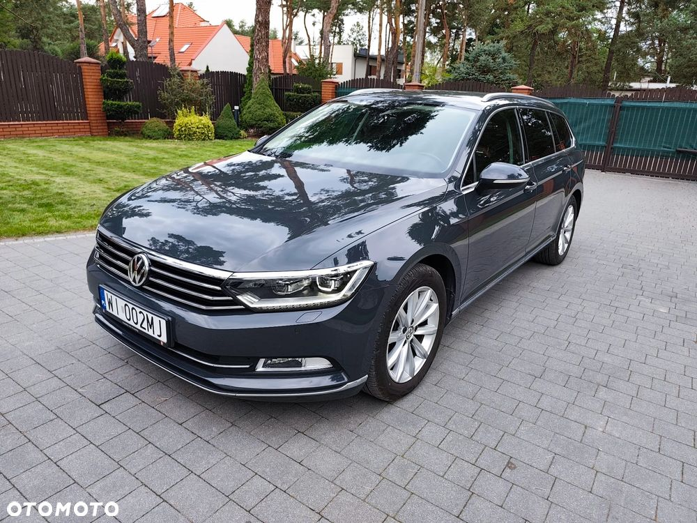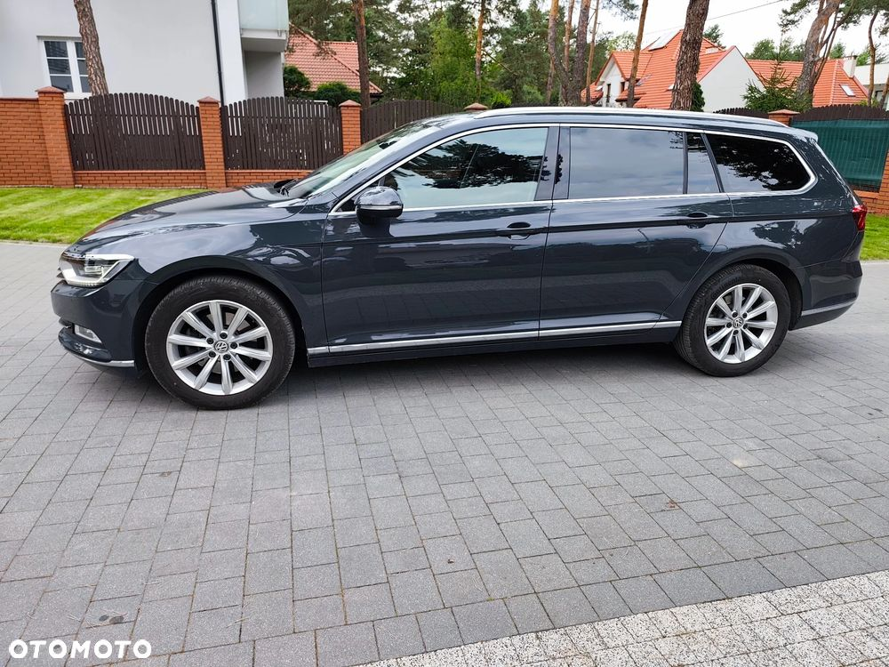

 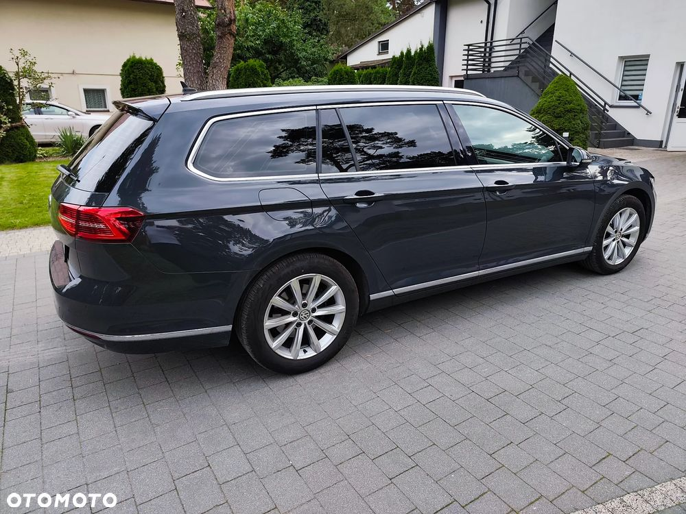
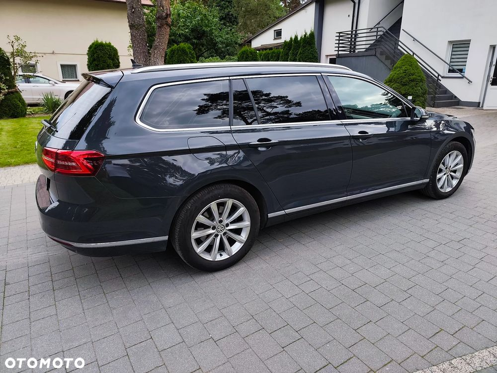 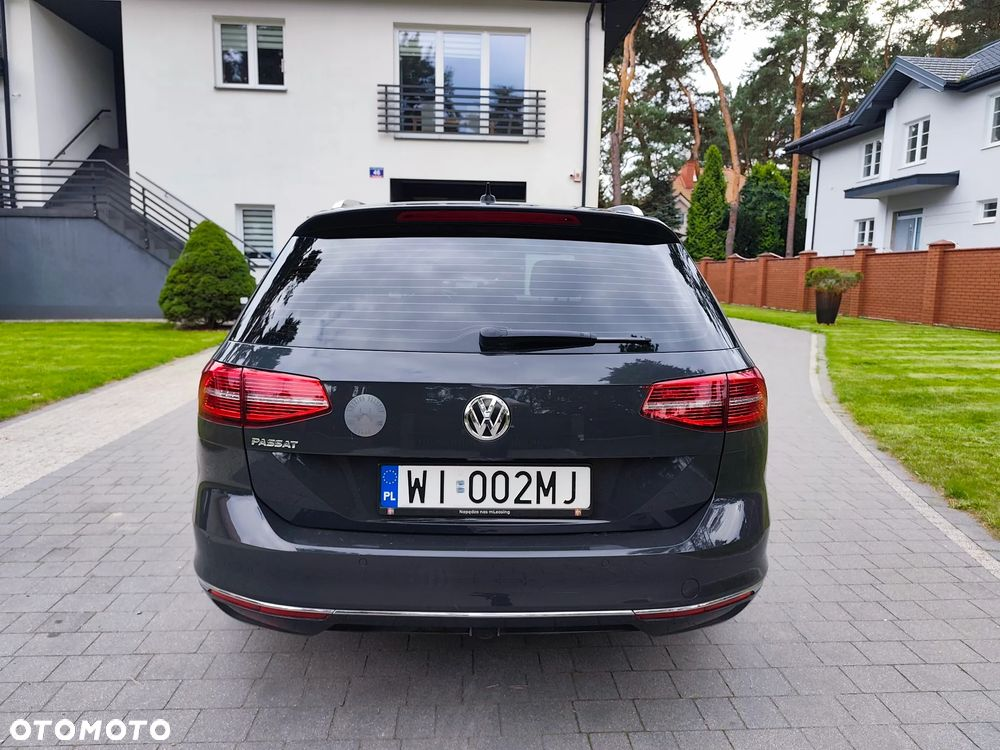
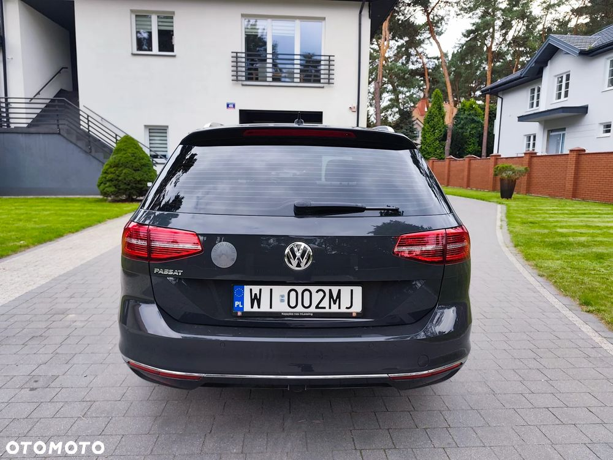 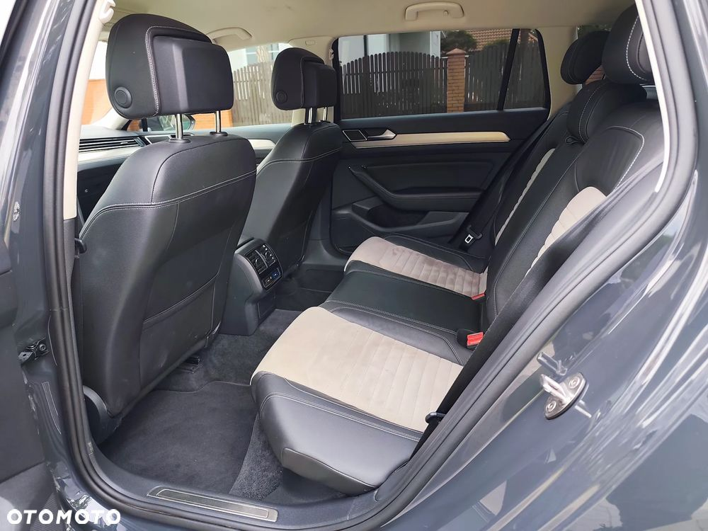
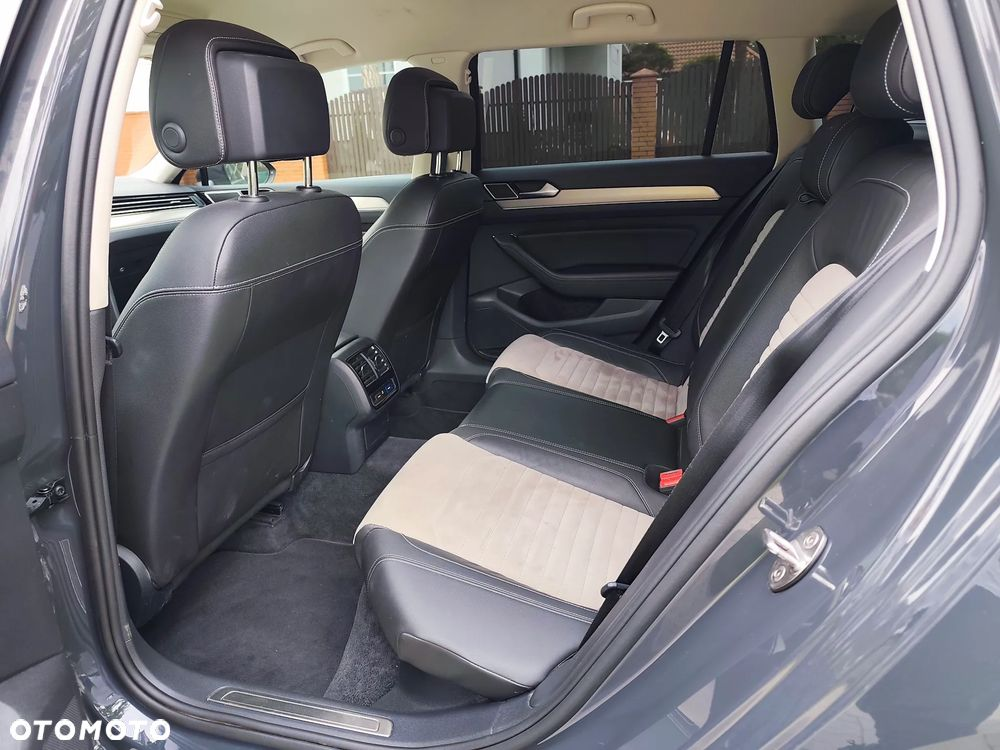 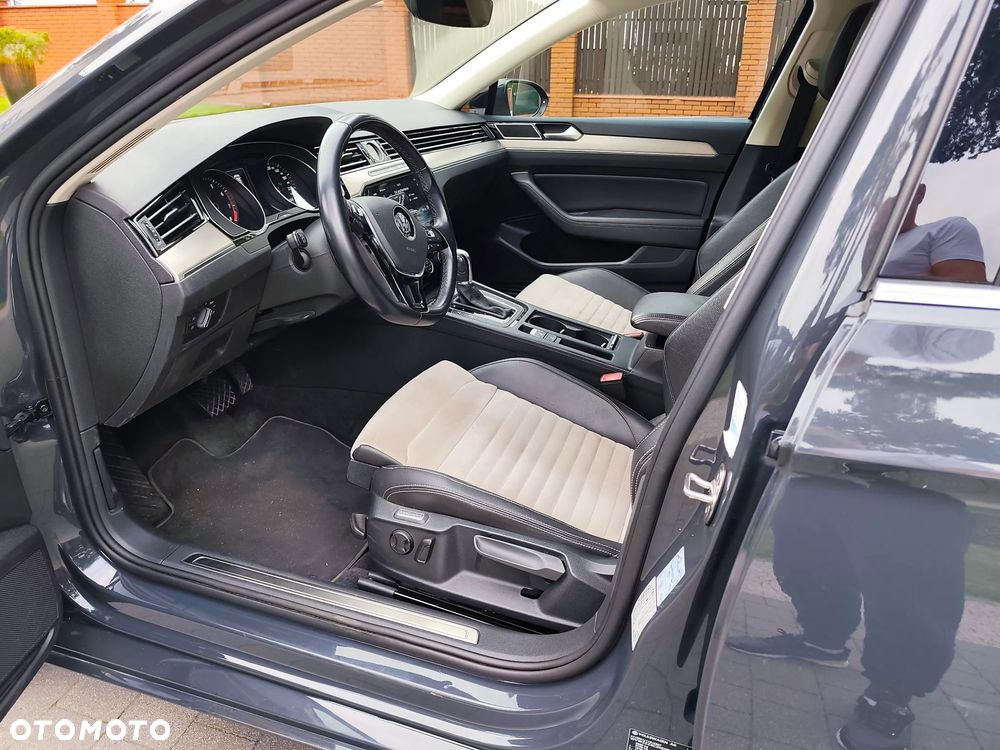
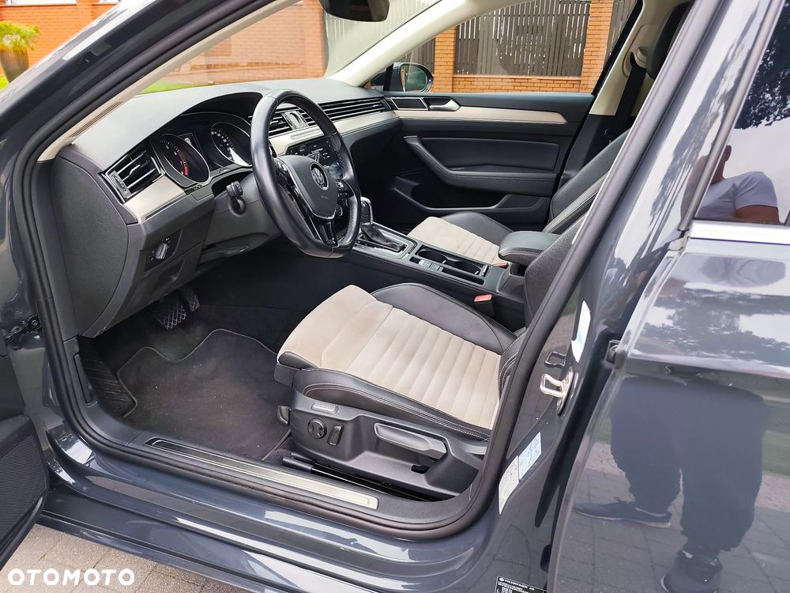

 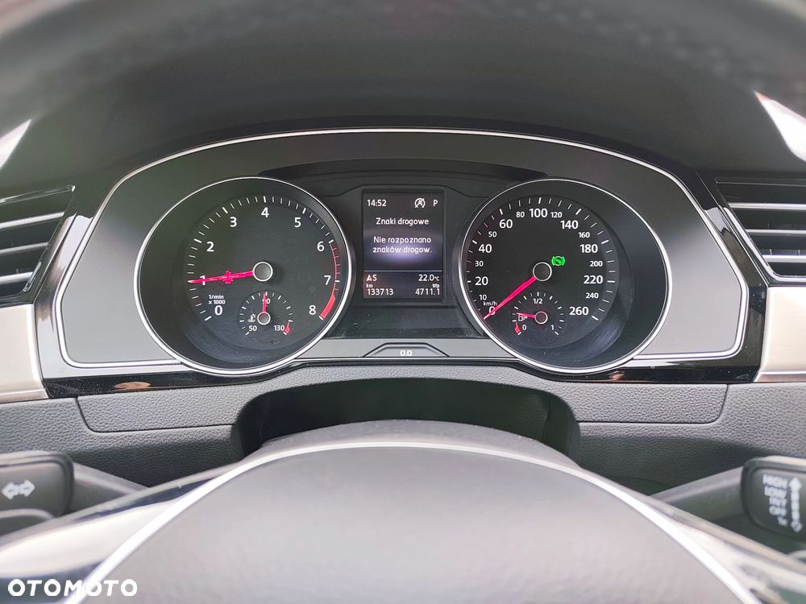
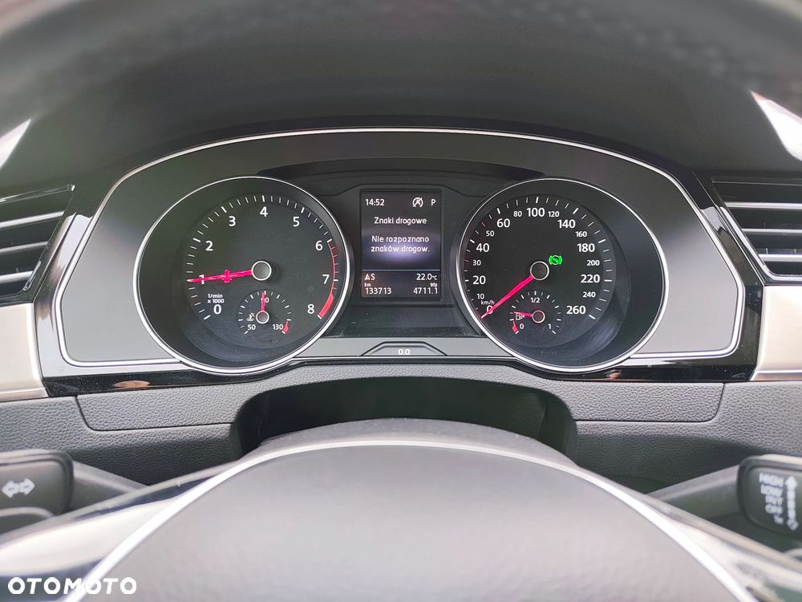